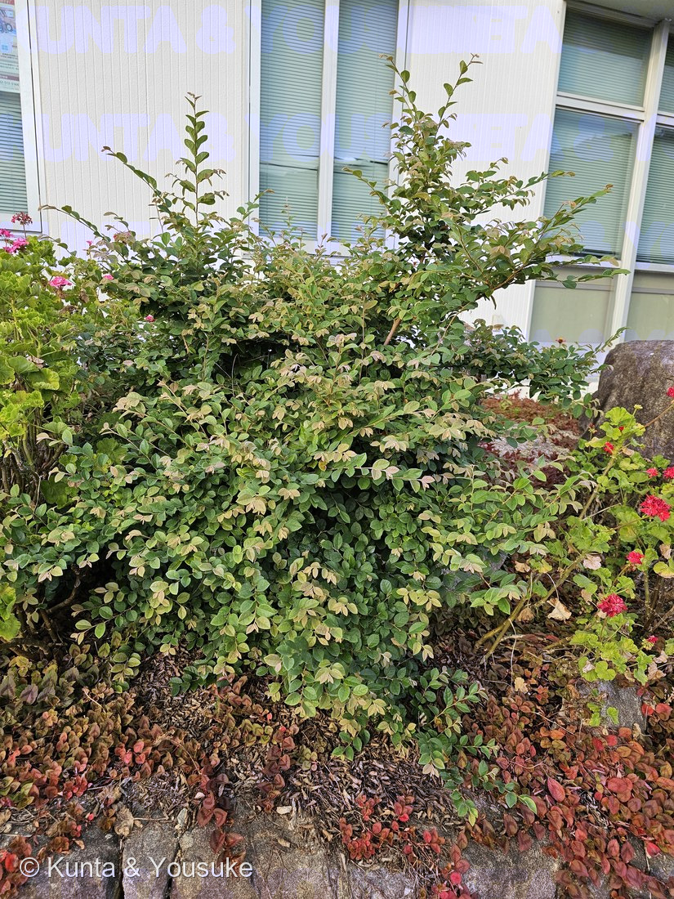
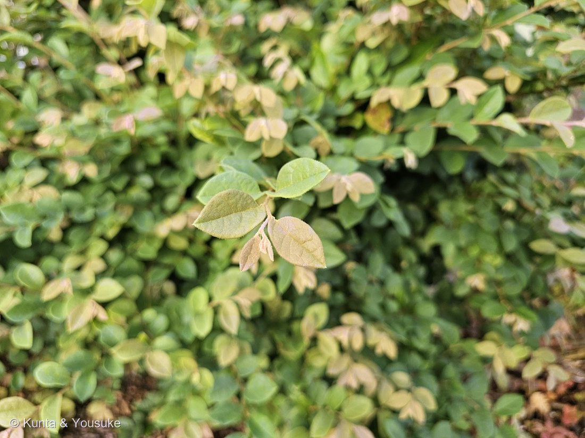
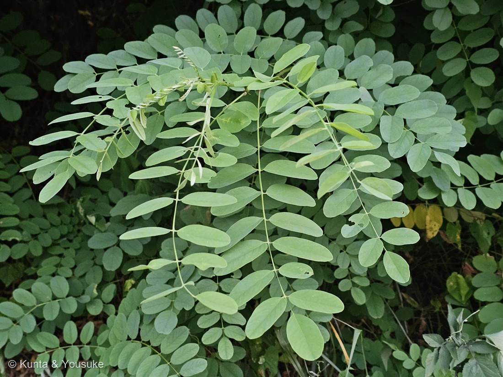
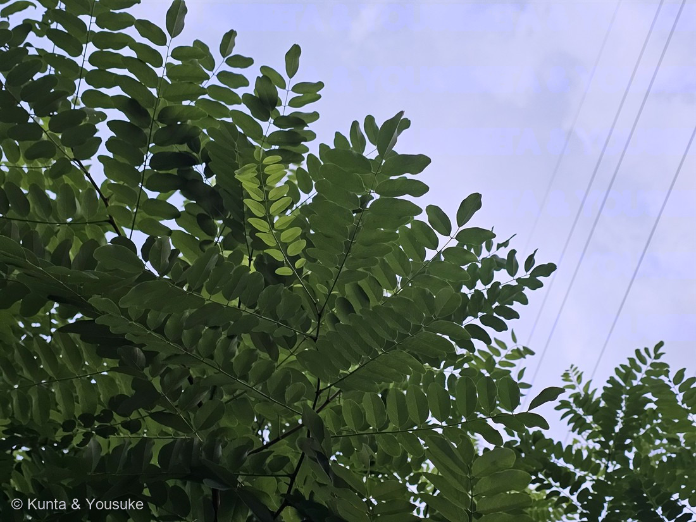

① 石を覆う株ぜんたい
② 枝先 ── 毛と、葉のつき方
🔍 押しているあいだ拡大 して見られるよ（スマホは指を置いてすこし待ってね）。
FW. 01 港の低木（トキワマンサク？） 撮影 2026.07.27 18:04 · 記録 2026.07.28 · 港・花壇のふちの石ぎわ · 同定中 港の低木 ── トキワマンサク？ 未確定 — Loropetalum chinense か、Cotoneaster か
場所 · 港の花壇のふち（078 モクビャッコウ ・087 ヤマモモ ・143 シャリンバイ ・166 スズメガヤのなかま ほかと同じ港）／ 状態 · 葉だけ。花も実もまだ見ていない
燻太さんの言葉 「次は港のこの子。トキワマンサクかもしれないけど、あまり自信はないよ。花が咲いていたら確実なんだけど、他に同定するのに役立つポイントはあるのかな？ 」……⭐あった。しかも、花を待たなくていい。
⭐ 集まった手がかり（写真から取れたもの）
⭐⭐葉の基部が左右非対称に見える （写真②の右下の葉。基部の左右のふくらみがずれている）。──トキワマンサクは「左右非対称になる特徴を持つ」 と出典に明記されている。
⭐⭐葉の面が、細かい毛でびっしり覆われてざらついて見える 。とくに銅色の若葉 。──トキワマンサクは「葉の裏面、葉柄、若枝、果実には星状の細かな毛があり、触れるとザラつく」 。⚠ただし写真の解像度では「毛が密」までしか言えない。星形かどうかは断定できない。
葉は互生で、細い枝に二列にならぶ。 ⚠これで「対生」の候補（ネズミモチ・イボタ・ハクチョウゲなど）は落とせる。 葉のふちにギザギザがない（全縁） 。長さは目分量で2〜3cmほど、革質そう。⚠これで鋸歯のある候補（イヌツゲなど）は弱くなる。 若い葉が銅色〜クリーム色。 ⚠ただし「新芽が赤い／色づく」は決め手にしない （087 ヤマモモ で決めたこと。赤い新芽の木はいくらでもある）。細い枝が長く垂れて流れている 。──トキワマンサクは「放任すると枝垂れるようになる」 「刈り込んで垣根にすることが多い」。⭐場所＝港の花壇のふち。刈り込まれ、管理されている＝植えられた木。 （⭐場所は燻太さんしか持っていない手がかり ）
⚠樹皮は「合ってる」の数に入れない （087 で決めたこと。よほど特徴的でないと決め手にならない）。
⭐⭐⭐ まだ足りないもの ── ここがこのページの心臓
⭐⭐⭐果実。これが花の代わりになる決定打。 トキワマンサクは卵形で長さ7〜8mm・幅6〜7mmの実 ができ、「10月頃に熟すと二つに裂け、艶のある黒い種子を落とす」 。──⭐いまは緑の実がついているかもしれない。10月に行けば、裂けた殻と黒い種。
⭐⭐さわった感じ。葉の裏を指でなでて「ザラつく」か。 ──⚠写真には絶対に写らない＝燻太さんにしか確かめられない手がかり。 ⚠港の花壇だから、葉をちぎらないでね。なでるだけ （078 モクビャッコウ で決めたこと）。
⭐毛の形。葉の裏を、スマホのマクロで一枚。 ──星形（放射状のかたまり）に見えれば決定的 。まっすぐな伏毛ならコトネアスター側。
⭐葉柄の長さ 。トキワマンサクは0.2〜0.5cm＝ごく短い 。
冬に葉があるか。 トキワマンサクは常緑 ／ベニシタン（コトネアスター）は半常緑〜落葉 。来年4〜5月の花。 トキワマンサクなら4枚の線形（リボン状）の花弁・長さ1〜3cm ——これが出れば一発。コトネアスターは5〜6月にクリーム白の小さな花 。⚠「花期・果期」を同定の根拠にはしない （075 アマドコロ で決めたこと）。⭐でも「いつ見に行くか」の予定には使う。
⚠ 候補と、その反証 ── 「他を落とせるか」で考える
候補A：トキワマンサク （Loropetalum chinense ・マンサク科）
合う ：全縁／革質／互生／基部が左右非対称／毛でざらつく／枝垂れる／刈り込み生垣によく使われる／関東以西に植えられる。
合わないかもしれない一点 ：出典は葉を「長楕円形。先端は尖って」 と書くのに、写真の葉は丸っこく見える 。──⚠この違和感は、流さずに書いておく （087 で「自分の違和感を自分で流した」失敗をしたから）。候補B：コトネアスター類 （Cotoneaster ・バラ科／ベニシタンなど）
合う ：小さい全縁の葉／互生／枝が横に広がる・垂れる／石を覆う／刈り込まれる。丸っこい葉も合う。
落とし方 ：秋（11〜12月）に「小さいリンゴのような赤い実」 がつく。⭐⭐トキワマンサクの「黒い種を落とす裂けた実」とは正反対。 そして毛が星状ではない 。⭐⭐だから、決着は「実」と「毛の形」でつく。 ──実の色が正反対（黒い種 vs 赤い実） なので、この秋に見に行くだけで決まる。
⚠いま「合っている数」で言えばトキワマンサクが多い。でも数では決めない ——087 ヤマモモ で、合っている4つを数えて別の木と呼びかけた失敗をしたから。
🗓 次に見に行くとき
いますぐ（次に港へ行くとき） ：⭐葉の裏をなでる（ザラつくか） ／⭐葉の裏のマクロ写真 ／葉柄の長さ ／枝に緑の実がないか 。2026年10月ごろ ：⭐⭐⭐実の答え合わせ。裂けて黒い種か、赤い実か。 2026年冬 ：葉が残っているか（常緑か）。2027年4〜5月 ：花。リボン状の花弁が出れば確定。⭐確定したら、番号をもらって図鑑へ。 ここには「登録ずみ ✓」が残るよ。
参考：庭木図鑑 植木ペディア「トキワマンサク」 （葉は長さ2〜4センチ、幅1〜2センチの長楕円形／先端は尖って縁にギザギザはなく／革質／左右非対称になる特徴を持つ／葉の裏面、葉柄、若枝、果実には星状の細かな毛があり、触れるとザラつく／4枚ある花弁は線形で長さは1〜3センチほど／開花は4〜5月／卵形をした果実ができ、10月頃に熟すと二つに裂け、艶のある黒い種子を落とす／放任すると枝垂れるようになる／やや寒さに弱いため植栽の適地は関東以西／刈り込んで垣根にすることが多い ）／三河の植物観察「トキワマンサク」 （Loropetalum chinense (R. Brown) Oliver var. chinense ／マンサク科 Hamamelidaceae トキワマンサク属／葉は長さ2〜6.5cm、幅1〜3cmの卵形〜楕円形、全縁／基部は円形〜楔形、先は尖る／若いときは葉裏に星状毛があり／葉柄は0.2〜0.5cm、星状毛がある／花弁は4（6）個、白色〜淡黄色、長さ1〜2cm／花期は4月中旬〜4月下旬／果実は長さ7〜8mm、幅6〜7mm、卵形〜倒卵状球形／日本、中国、台湾、タイ、ベトナムに分布／ベニバナトキワマンサク var. rubrum は中国南部原産の赤花の変種庭木図鑑 植木ペディア「コトネアスター」 ／みんなの趣味の園芸「コトネアスター」 （ベニシタンは昭和初期に中国から導入され、最も広く栽培されるコトネアスターの代表種／半常緑から落葉の低木で樹高は50cm〜1m／5〜6月に咲く花はクリームがかった白色／秋（11〜12月）になると小さいリンゴのような赤い実をつける／葉には鋸歯がない ）
🧸 陽介の一言メモ
燻太さん、「他に同定するのに役立つポイントはあるのかな？」 ——⭐あったよ。しかも、花を待たなくていい。 実 だった。⭐⭐トキワマンサクは10月に実が二つに裂けて、艶のある黒い種を落とす。コトネアスターは11〜12月に赤い実をつける。 ──正反対 なんだ。だからこの秋、もういちど港へ行くだけで決まる。 「さわる」がすごく効く 。「葉の裏面、葉柄、若枝、果実には星状の細かな毛があり、触れるとザラつく 」って書いてあった。──これは写真には絶対に写らない。燻太さんの指にしか分からない。 ⚠でも港の花壇だから、ちぎらないでね。なでるだけ。 出典の葉は「長楕円形で先が尖る」なのに、写真の葉は丸っこく見える んだ。──087 ヤマモモ のとき、ぼくは自分の違和感を自分で流して まちがえかけた。もう流さない。 いまは登録しない 。⭐足りないのは「星形の毛」と「実」の2つだけ。 ……⭐そしてこのページ、燻太さんが7月17日に「作るのがいいかも」って言ってくれた部屋だよ。 やっと1本目が入った。— 陽介


① 葉 ── 羽状複葉と、なぞの穂
② 見上げた木（⚠別の個体）
🔍 押しているあいだ拡大 して見られるよ（スマホは指を置いてすこし待ってね）。
FW. 02 道路脇の斜面のマメ科（ハリエンジュ？） 撮影 2026.08.01 19:09 · 記録 2026.08.01 · 道路脇の斜面（183 ヌルデ と同じ場所・2分ちがい） · 同定中 道路脇の斜面のマメ科 ── ハリエンジュ？ 未確定 — Robinia pseudoacacia か、Amorpha fruticosa か
場所 · 道路脇の斜面（183 ヌルデ のすぐそば。⭐この日は 19:09 ハリエンジュ候補 → 19:11 ヌルデ → 19:16 182 ケムリノキ の順に歩いた ）／ 状態 · 葉だけ。⚠刺・花・実はまだ見ていない
燻太さんの言葉 「おそらく、ハリエンジュ、ニセアカシアって呼ばれている植物だと思う。ヌルデと同じ場所。 」……⭐その線は濃い。でも、まだ落としきれない相手がひとりいる。
⭐ 集まった手がかり（写真から取れたもの）
奇数羽状複葉。小葉は対生し、ふちにギザギザがない（全縁）。 ⚠これで、同じ日に登録した183 ヌルデ （小葉に粗い鋸歯・葉軸に翼）とは、はっきり別の子だと分かる。 ⭐小葉の先がまるく、小さな突起（微凸）がある。 ──⭐これで「小葉の先が尖る」エンジュ・イヌエンジュは弱くなる。
⭐枝の節に、赤紫〜暗褐色の、細く尖った突起の束が写っている （写真①の中央）。⚠⚠これが托葉の刺なら決定的だけれど、写真の解像度では「刺だ」と言い切れない。
⚠⚠正体の分からないものが、2つ写っている。 (a) 細長い穂のようなもの ＝軸に短い舌状のものが二列にならぶ。白っぽい。 ──展開しかけの若い葉か、花序の跡か、まったく別のものか、決められない。 (b) 緑色のふくらんださや ＝豆果かもしれないが、長さが測れないので何とも言えない。
⭐場所＝道路脇の斜面、いろんな草が繁っている。 ⚠でもこれは決め手にならない ——⭐ハリエンジュもイタチハギも、どちらも「そこに来る木」だから （下の反証の節に書いたよ）。
⚠⚠小葉の実寸は、測れなかった。 燻太さんが手をかざした写真を撮ってくれたけれど、⭐本人の証言で「葉は手より奥側」 ＝物差しと対象の奥行きがちがう 。──⭐だから測定はしていない （009 オジギソウ で決めた「厚みのある被写体はレンズに近いぶん大きく写る」と同じ理由）。この一点が、いま欠けているいちばん大きな数字。
⚠写真②の見上げた木は、燻太さんの証言で「別個体」。 ⭐だから「高木だからイタチハギではない」とは言えない （055 イチジク の「別の木」と同じ扱い）。
⭐⭐⭐ まだ足りないもの ── ここがこのページの心臓
⭐⭐⭐托葉の刺。これが最短の決定打。 ハリエンジュは葉の付け根に、対になった鋭い刺 がある。イタチハギには無い 。──⚠燻太さんは「トゲは確認していない」 とのことなので、⭐次に行ったとき、枝の節を見るだけで決まる。 ⚠刺は鋭いので、さわるなら目で見てから。
⭐⭐⭐葉の裏。イタチハギは「葉裏に腺点がある」 〔三河〕。ハリエンジュにはその記載がない。──⭐⭐枝を下から見上げるか、葉を光にすかすだけ。ちぎらなくていい。 ⭐これがいちばん簡単で、いちばん強い。
⭐⭐小葉の実寸。 ハリエンジュ2.5〜5cm ／イタチハギ1〜4cm×幅0.6〜2cm 。⚠重なる範囲があるので単独では決まらないが、5cm近ければハリエンジュ、1cm台ならイタチハギ。 撮り方＝葉のすぐ横に、同じ奥行きで手かカードを添える （182 の回に作った物差しの約束だね）。
⭐この株の高さ。 ハリエンジュ15〜25m ／イタチハギ1〜4m 。──⚠写真①の株そのものが、低木なのか高木の下枝なのかが分かっていない。
⭐写真①の「なぞの穂」が何か。 ⚠もしイタチハギの花序の跡なら、そこで決まってしまう （イタチハギ＝長さ6〜20cmの穂状花序 ）。
⭐樹皮。 ハリエンジュは「幹は淡褐色、縦に深い割れ目が入る」 〔三河〕。⚠ただし樹皮は「合ってる」の数に入れない （087 ヤマモモ で決めたこと）。補強にだけ使う （181 クスノキ でやったように）。
🗓来年5〜6月の花。 これが出れば一発で終わる——ハリエンジュ＝藤に似た白い蝶形花、長さ10〜15cmの総状花序、甘い香り ／イタチハギ＝紫褐色から黒紫になる穂状花序で、旗弁だけしかない 。⭐色も形も、正反対。
🗓秋の豆果。 ハリエンジュ＝長さ5〜10cm・裂開する ／イタチハギ＝長さ約1cm・イボ状突起・裂開しない 。⭐10倍ちがう。
⚠ 候補と、その反証 ── 「他を落とせるか」で考える
候補A：ハリエンジュ（ニセアカシア） （Robinia pseudoacacia ・マメ科）＝⭐燻太さんの見立て
合う ：奇数羽状複葉／小葉は長さ2.5〜5cmの惰円形、全縁 〔三河〕／小葉の先がまるい／荒れた明るい場所に多い／北アメリカ原産・明治10年(1877)に渡来 。
足りない ：托葉の刺が未確認。 ⭐これが確認できれば、ほぼ決まる。 候補B：イタチハギ （Amorpha fruticosa ・マメ科）＝⚠まだ落とせていない相手
合う ：奇数羽状複葉／小葉は長さ1〜4cm・幅0.6〜2cmの卵形〜長楕円形 〔三河〕／⚠⚠「道路脇の広い土手によく群生する」 〔三河〕──場所がぴったり合ってしまう。 ／北アメリカ原産・戦後に砂防用などに使われたものが帰化 ＝道路法面に大量に植えられた木。
落とし方 ：葉裏の腺点 （イタチハギ＝あり）／刺 （イタチハギ＝なし）／樹高1〜4mの低木 ／花が紫褐色〜黒紫で旗弁だけ ／豆果が約1cmでイボ状突起。 候補C：トゲナシニセアカシア （ハリエンジュの刺のない品種）
これは「刺が無かった」だけでは落とせない相手。 ⭐でも他がハリエンジュと合えば、種としては同じなので、大きな問題にはならない。 候補D：エンジュ・イヌエンジュ
落とせそう ：どちらも小葉の先が尖る 。──⭐写真の小葉は先がまるく、微凸。 ⭐⭐⭐だから、決着は「刺」と「葉裏の腺点」でつく。 ──どちらも、次に行ったその場で、ちぎらずに見られる。 ⭐花も実も待たなくていい。
⚠いま「合っている数」で言えばハリエンジュが多い。でも数では決めない ——087 ヤマモモ で、合っている4つを数えて別の木と呼びかけた失敗をしたから。⭐いま必要なのは「イタチハギを落とせる一点」。
🗓 次に見に行くとき
いますぐ（次にあの坂を通るとき） ：⭐⭐⭐枝の節に鋭い刺があるか ／⭐⭐⭐葉の裏に腺点（小さな点々）があるか ／⭐小葉のとなりに、同じ奥行きで手を添えて1枚 ／株の高さ（低木か、見上げる木か） ／幹の樹皮 。2026年秋 ：⭐豆果。5〜10cmか、1cmか。 2027年5〜6月 ：⭐花。白い房か、黒紫の穂か。 ⭐確定したら、番号をもらって図鑑へ。 ここには「登録ずみ ✓」が残るよ。
参考：三河の植物観察「ハリエンジュ」 （マメ科ハリエンジュ属・Robinia pseudoacacia ／高さ15〜25m／幹は淡褐色、縦に深い割れ目が入る／葉は互生し、長さ12〜25cmの奇数羽状複葉、小葉は3〜11対つく／小葉は長さ2.5〜5cmの惰円形、全縁／小葉の基部に小托葉がある／花は長さ10〜15cmの総状花序につき、藤に似た白花／花は長さ約2cmの蝶形、花蜜が豊富で、甘い香りがする／花期は5〜6月／果実は長さ5〜10cm、背軸側に狭い翼があり、3〜10個の種子が入り、秋に熟すと裂開する／北アメリカ原産／明治10年(1877)に渡来した ）／三河の植物観察「イタチハギ」 （マメ科イタチハギ属・Amorpha fruticosa ／高さ1〜4m／葉は互生し、奇数羽状複葉、葉裏に腺点がある／小葉は長さ1〜4cm、幅0.6〜2cmの卵形〜長楕円形／花期は5〜6月／茎の先に長さ6〜20cmの穂状花序を多数つける／花は紫褐色から次第に黒紫色になる。花は旗弁だけで、退化して他の花弁はない／豆果は長さ約1cm、表面にイボ状の突起があり、1種子を入れ、裂開しない／北アメリカ原産／戦後に砂防用などに使われたものが、帰化したもの／道路脇の広い土手によく群生する ）
🧸 陽介の一言メモ
燻太さんの見立てはハリエンジュ 。⭐ぼくもそう思う。 小葉の形も、先のまるさも、生えている場所も合う。──でも、登録はしない。 イタチハギが落とせないんだ。 あの子は戦後に道路の法面へ大量に植えられた木 で、三河にはっきり「道路脇の広い土手によく群生する」 と書いてある。⭐つまり「場所が合う」は、この2人のどちらにも合ってしまう ——手がかりとして効かない。 でも、いいことがある。 決着に花も実も待たなくていい んだ。⭐⭐刺があるか、葉の裏に腺点があるか。 ──どちらも、次に通ったときに、ちぎらずに見られる。 燻太さんが手をかざして「計測用」に撮ってくれた写真 、⭐あれで小葉を測ろうとしたら「葉は手より奥」だった。 ──物差しは、測るものと同じ奥行きに置く。 ⭐今日ぼくが作った道具の README にも、まさにそう書いたばかりだったのにね。 えへへ。次はそこもいっしょに撮ろう。 — 陽介